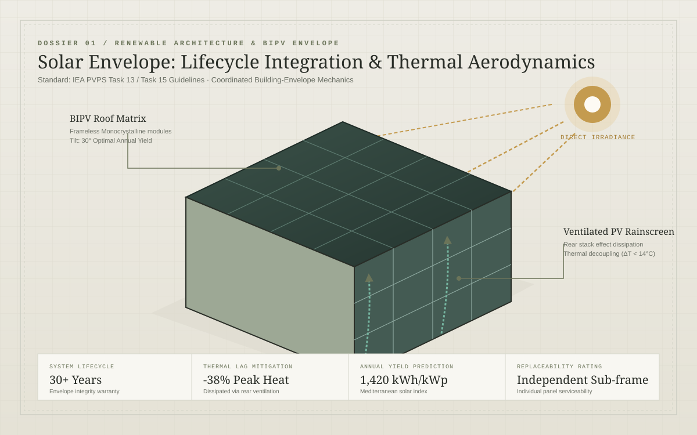

FEATURED DOSSIER / BIPV ENVELOPESolar Architecture: Design for a Lifetime, Not Just Peak Power
New IEA PVPS guidance shifts building-integrated photovoltaics from peak power claims to whole-building durability, rear convective cooling cavities, and 30-year lifecycle maintenance.